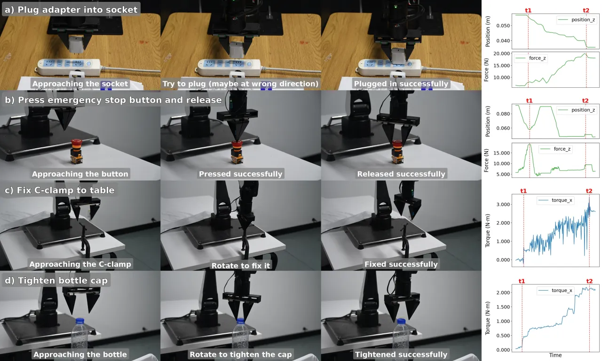
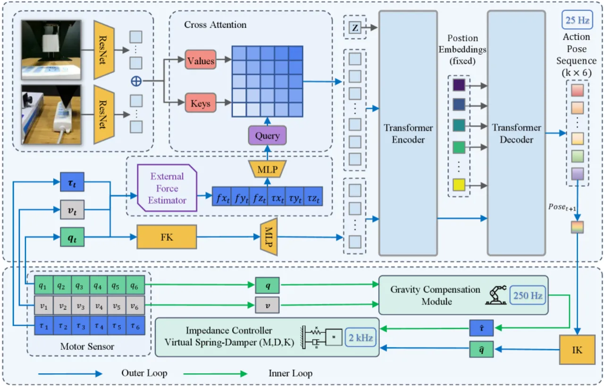
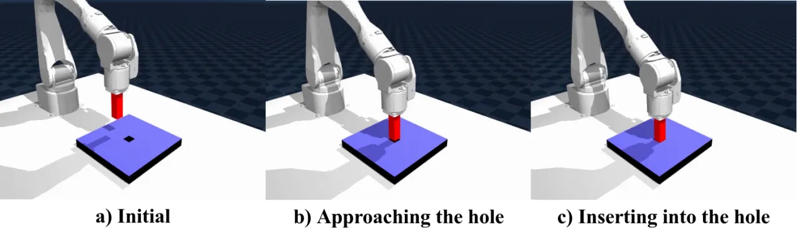
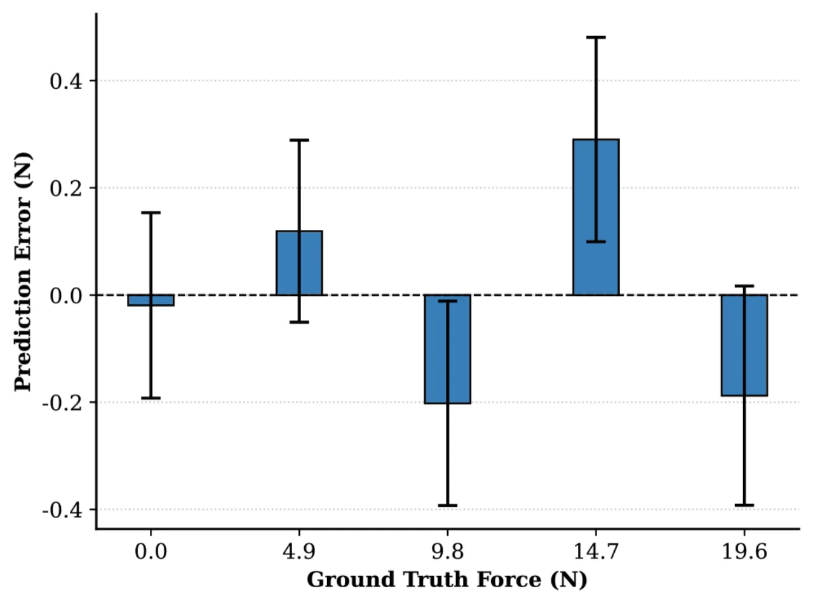

多数模仿学习（IL）策略仍是 position-centric、缺乏显式的力感知，而给协作臂加装 F/T 传感器又昂贵。FILIC 用双环结构把 Transformer 模仿学习策略（外环）与阻抗力矩控制（内环）结合，做到 “compliant force-informed, force-executed manipulation”；对于没有力传感器的机器人，进一步提出用关节力矩 + 数字孪生做无传感器的末端力估计。
很多接触密集（contact-rich）任务——插拔、按压、锁紧——都需要精确的力调节。但主流 IL 策略只学位置轨迹，对力一无所知；而给协作臂装 F/T 传感器 “is often costly and requires additional hardware design”，限制了可扩展性。FILIC 要回答的是：能否不加专用力传感器，也让廉价机器人学会既能感知力、又能柔顺执行力的操作。
“most imitation learning (IL) policies remain position-centric and lack explicit force awareness, and adding force/torque sensors to collaborative robot arms is often costly.”

FILIC 是一个双环（dual-loop）框架：高层模仿学习策略（外环，25 Hz）负责“看图 + 感知力 → 输出目标末端位姿序列”；底层阻抗力矩控制器（内环，2 kHz）负责柔顺地执行这些位姿。对于没有力传感器的机器人，一个基于 Jacobian 的末端力估计器把关节力矩反解为末端 wrench，喂回策略。

视觉观测由双 ResNet backbone 编码，末端力向量经 MLP 映射，二者通过 cross-attention 融合成多模态特征，交给 ACT（Action Chunking with Transformers）风格的 Transformer encoder-decoder，输出一段 6-DOF 目标末端位姿序列（k × 6）。这样策略不仅“看得见”，还“感受得到”接触力。
内环用简化的弹簧-阻尼形式（为稳定性省去惯性项），把外环给的目标位姿转成关节力矩指令：
其中 K、B 为刚度/阻尼系数，(q̂, v̂) 为期望关节位置/速度，τ̂ 为重力与 Coriolis 补偿项（以 250 Hz 刷新）。由此实现“force-executed”的柔顺执行。
核心思路：真实观测的关节力矩里，扣掉机器人自身动力学“应有”的力矩，剩下的就是外部接触带来的力矩；再用 Jacobian 转置的伪逆映射到末端 wrench：
其中 τ_obs 是电机传感器观测到的关节力矩；τ_inv 是一个与真机同步的 MuJoCo 数字孪生（digital twin）给出的期望动力学力矩；J(q)T+ 为 Jacobian 转置的伪逆，通过 SVD 求得。这样无需任何专用 F/T 传感器，就能得到末端六维力估计。
评测分两部分：仿真中的 peg-in-hole 插孔（6-DOF 机械臂，0.95 cm 圆柱销、1 cm 孔），以及真机上的四个接触密集任务——插适配器（plug adapter）、按急停按钮（e-stop）、C 型夹固定（C-clamp）、拧瓶盖（cap tightening）。三种本体感知输入作对比：仅末端位置（Pos）、位置 + 关节力矩（Pos + JT）、位置 + 估计末端力（Pos + EF）。

| 本体感知输入 | 成功率 |
|---|---|
| EE position only | 68.0% |
| EE position + joint torque | 80.0% |
| EE position + estimated EE force | 90.0% |
| 任务 | Pos only | Pos + JT | Pos + EF |
|---|---|---|---|
| Plug adapter 插适配器 | 46.7% | 63.3% | 80.0% |
| E-stop button 急停按钮 | 43.3% | 60.0% | 83.3% |
| C-clamp 夹具固定 | 30.0% | 63.3% | 76.6% |
| Cap tightening 拧瓶盖 | 26.6% | 70.0% | 80.0% |
相对于 joint-torque 输入，估计末端力（EF）在真机上分别带来 +16.7 / +23.3 / +13.3 / +10.0 个百分点的提升（plug / e-stop / clamp / cap），仿真中为 +10.0 pp。position-only 基线则表现出一致的失败模式：“inability to recover from lateral misalignment”、按压行为不一致、以及任务过早终止。

“Our sensorless force reconstruction relies on modeled dynamics.” 即末端力估计的准确度取决于数字孪生动力学模型与真机的一致性；作者将“enhancing robustness against modeling inaccuracies”列为 future work。
内环用固定 K、B 的弹簧-阻尼律；作者提到未来要 “integrating variable impedance”，说明当前对刚度需求变化大的任务适应性有限。
力经 Jacobian 伪逆显式估计后喂给策略；作者将 “exploring implicit force reasoning” 列为方向，暗示当前管线对模型误差与噪声较敏感。
评测集中在插孔/按压/锁紧/拧紧等少数接触任务、单一 6-DOF 平台（AIRBOT Play）；向更多任务与本体的泛化尚待验证。